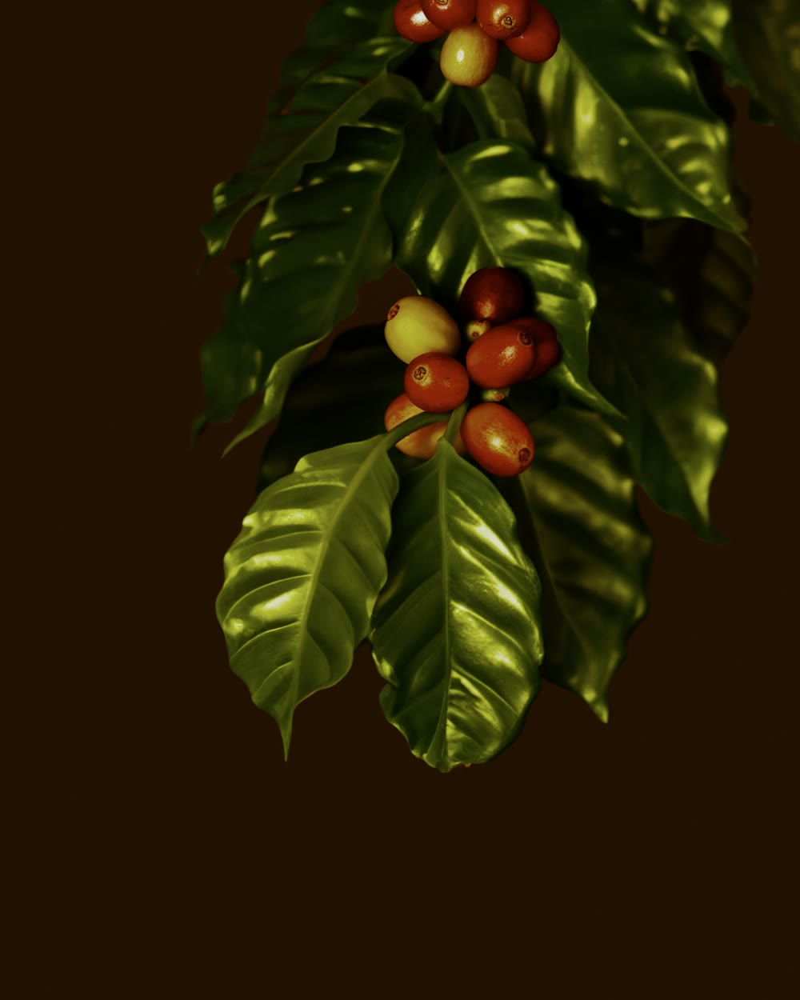
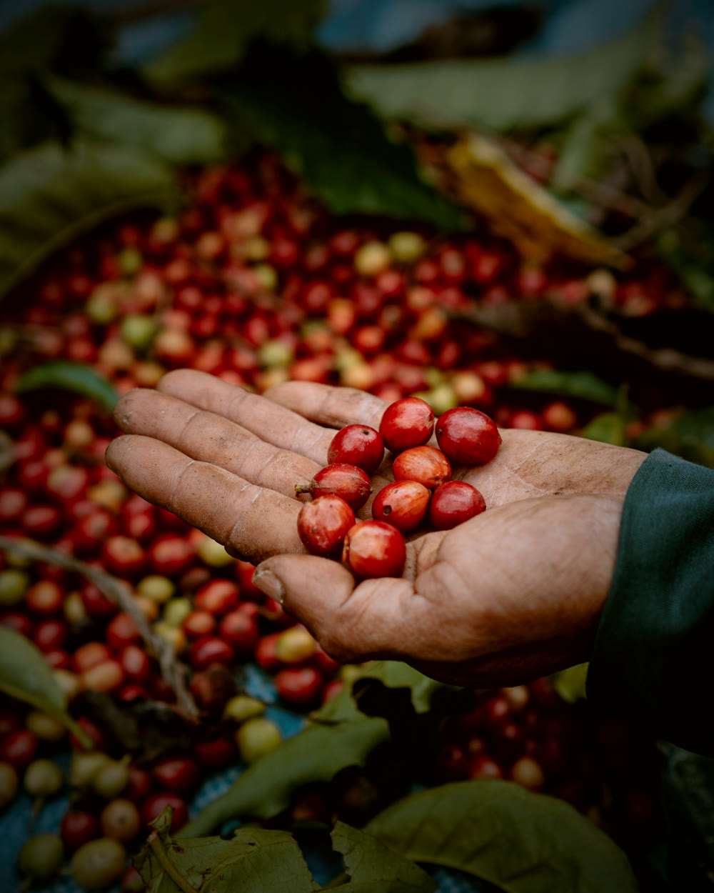
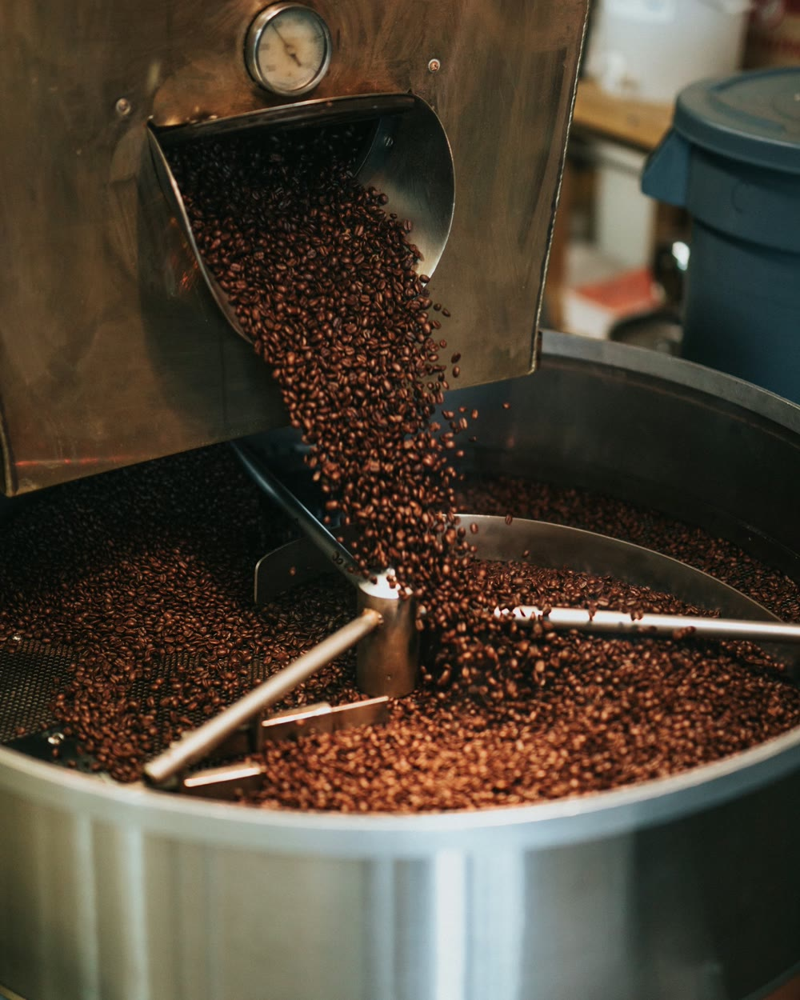
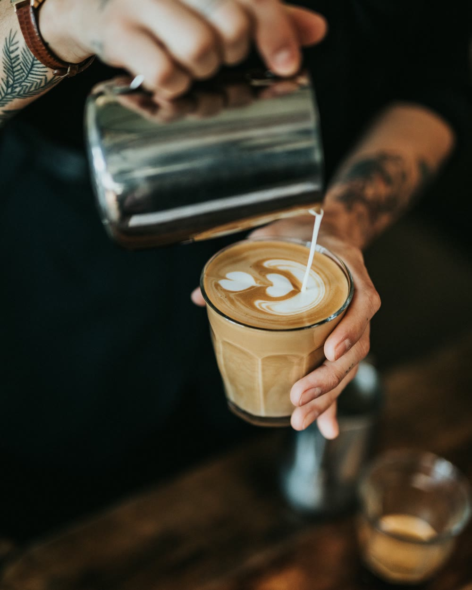

Paso 01
Cortado rojo.
Cada cereza se corta a mano, solo cuando está bien roja.

Nuestra historia
Hace unos años probamos un café de Chiapas que no sabía a quemado ni a agrio. Sabía a cereza, a cacao y a piloncillo. Esa taza nos cambió el plan: dejamos de comprar café por costal y fuimos a buscar a quien lo cultivaba.
Hoy compramos directo a fincas de Chiapas y Veracruz sembradas entre 1,300 y 1,800 metros de altura. Allá arriba la cereza madura despacio, y esa calma se nota en la taza.
Tostamos en lotes chicos, con una curva distinta para cada origen, y dejamos reposar el grano antes de servirlo. Lo demás es la barra: luz baja, madera, buena música y tiempo para quedarte.
Pruébalo
Una cereza verde sabe a pasto. Una amarilla sabe a limón. Una roja sabe a postre. Mantén presionada la cereza y mírala madurar.
Verde · a pasto
Así sabe una taza madura.
El método

Cada cereza se corta a mano, solo cuando está bien roja.

En lotes chicos, tostado lo justo. Dulce, con un final apenas ahumado.

Cada taza se prepara cuando la pides, como a ti te gusta.
En video
Así se recolecta, se tuesta y se muele el café de forma artesanal: el mismo cuidado que buscamos en cada lote que servimos.